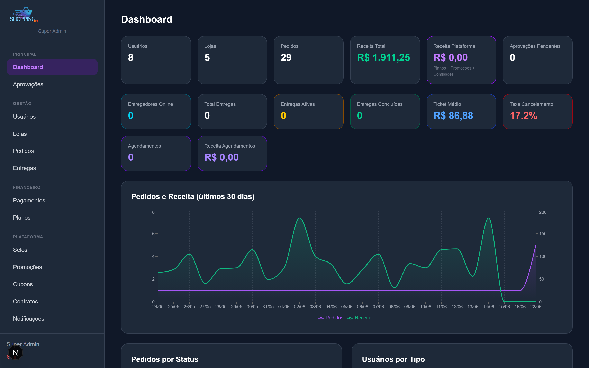
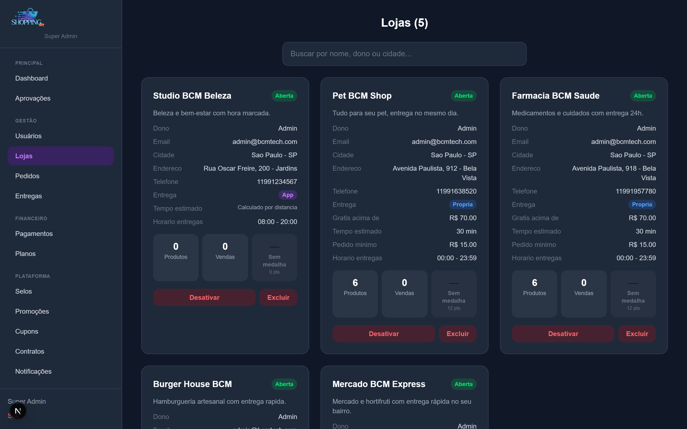
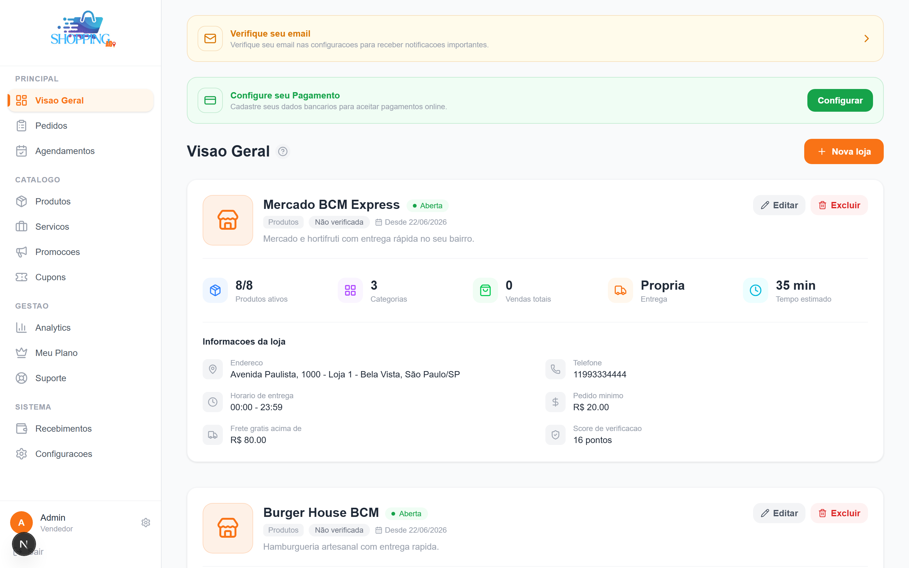
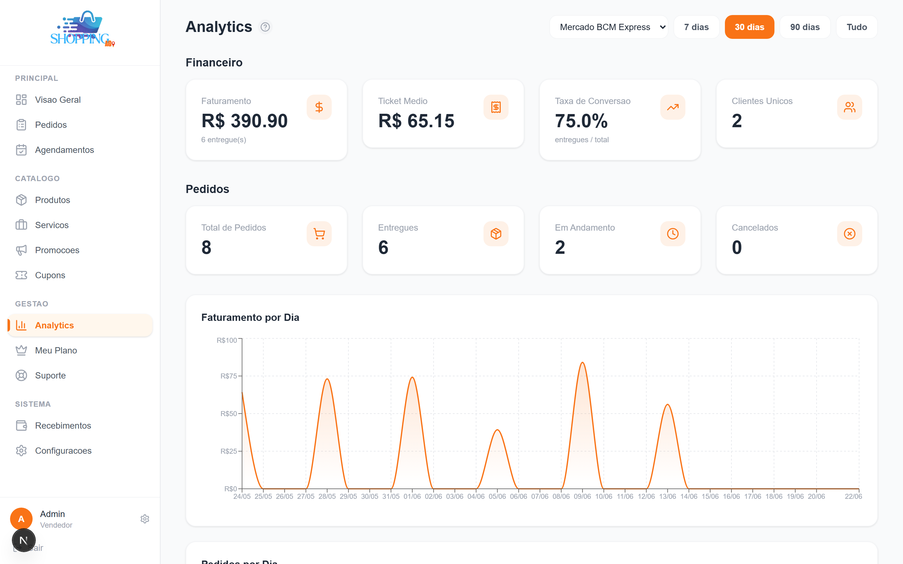
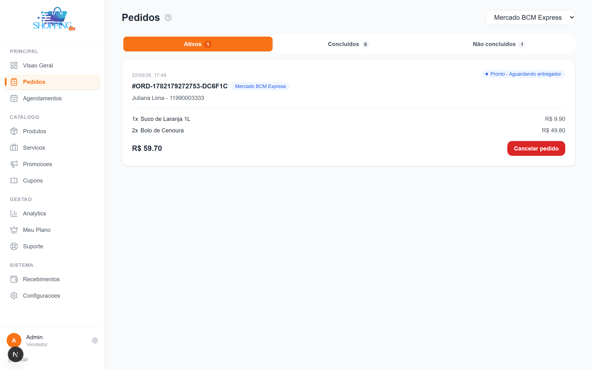
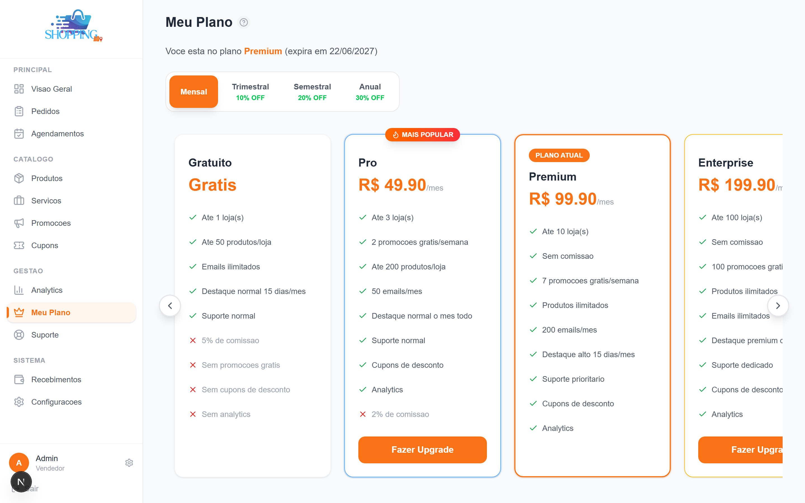
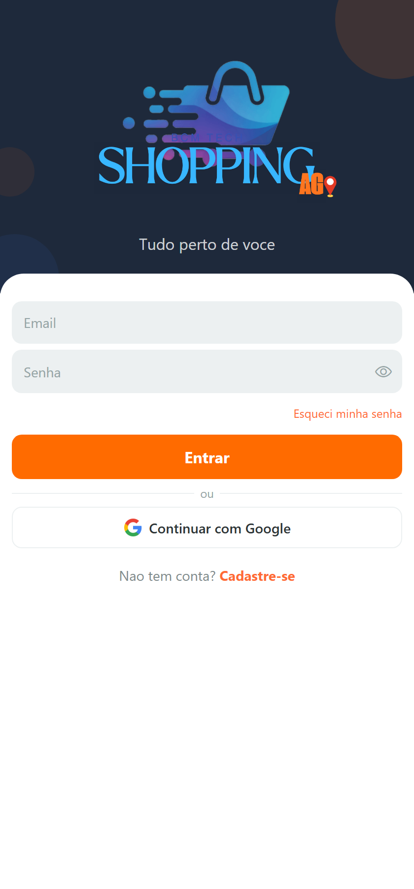
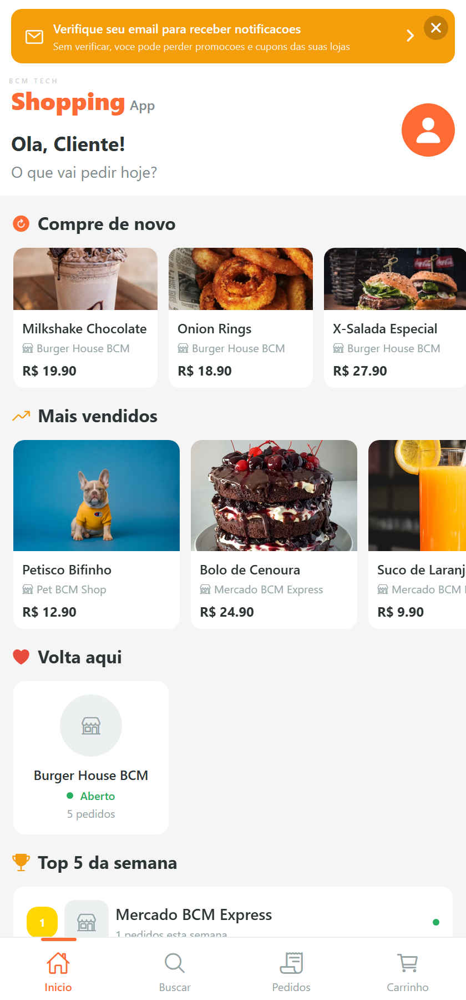
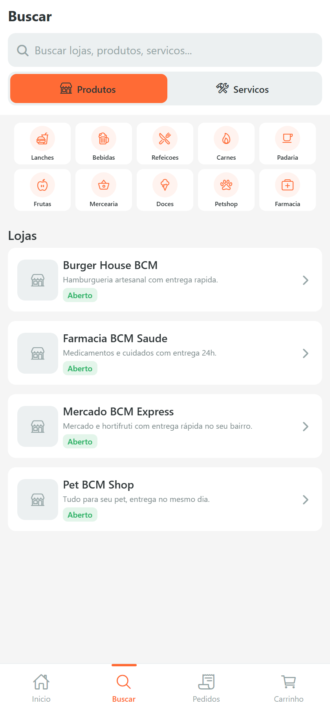
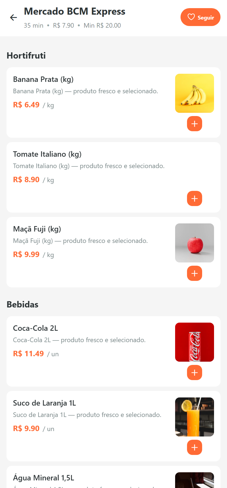

Um marketplace de delivery de verdade não é um app — são quatro sistemas conversando: quem pede, quem vende, quem entrega e quem administra. O bcmTech Shopping cobre os quatro, sobre uma única API em GraphQL, com pagamento e rastreamento em tempo real.
O problema
Montar uma operação de delivery exige muito mais que uma vitrine: precisa de catálogo por loja, carrinho e checkout, repasse financeiro para o lojista, acompanhamento da entrega ao vivo, e uma camada de administração para moderar lojas, usuários e pagamentos. Tudo isso precisa estar sincronizado, em tempo real, entre perfis com permissões diferentes.
A arquitetura
Quatro aplicações integradas sobre uma API central — todas falando GraphQL (HTTP + WebSocket para atualizações ao vivo):
- delivery-api — o cérebro: NestJS + TypeScript, GraphQL (Apollo), TypeORM, PostgreSQL, Redis + Bull para filas, e subscriptions via WebSocket.
- App do cliente — React Native + Expo: navega por lojas, monta o carrinho, fecha pedido (PIX, cartão ou na entrega) e acompanha a entrega em tempo real.
- Painel do lojista — Next.js 16: produtos, categorias, pedidos ao vivo, promoções, cupons, analytics, recebimentos e planos de assinatura.
- Painel super-admin — Next.js 16: métricas e gráficos, gestão de usuários, lojas, pedidos, pagamentos, aprovações e configurações da plataforma.
Painel super-admin
Visão de plataforma: receita, pedidos e usuários consolidados, com gráfico de vendas dos últimos 30 dias e gestão de todas as lojas.


Painel do lojista
O lojista gerencia tudo da própria operação: cadastro de várias lojas, pedidos chegando em tempo real (aceitar, preparar, despachar), e — nos planos pagos — promoções, cupons e analytics. O plano é controlado pelo super-admin (FREE → PRO → PREMIUM → ENTERPRISE).




App do cliente
Multiplataforma (iOS, Android e web) em React Native + Expo. Da descoberta de lojas ao checkout com pagamento e rastreamento — com a interface acabada que o usuário final espera.




Tecnologia & decisões
- API: NestJS + TypeScript, GraphQL (Apollo Server), TypeORM + PostgreSQL, Redis + Bull para filas assíncronas.
- Tempo real: GraphQL Subscriptions sobre WebSocket — pedidos e localização de entregadores atualizando ao vivo.
- Pagamentos: Pagar.me com split — o valor vai 100% para a plataforma e é repassado ao lojista só após a entrega confirmada.
- Multi-perfil: cliente, lojista, entregador e super-admin, com guards e permissões por papel (JWT).
- Integrações: Cloudinary (imagens), Expo Push (notificações), Resend (e-mail), WhatsApp (WAHA) e automação com IA via N8N.
- Painéis: Next.js 16 + React 19 + Tailwind, com dark mode e gráficos (Recharts).
- Mobile: React Native + Expo Router, mapas, biometria e rastreamento em background.
Resultado
Uma plataforma de delivery completa, ponta a ponta — da modelagem do banco e da API aos dois painéis web e ao app mobile, com pagamento real, tempo real e múltiplos perfis. Arquitetura distribuída que reflete uma operação de marketplace de verdade.